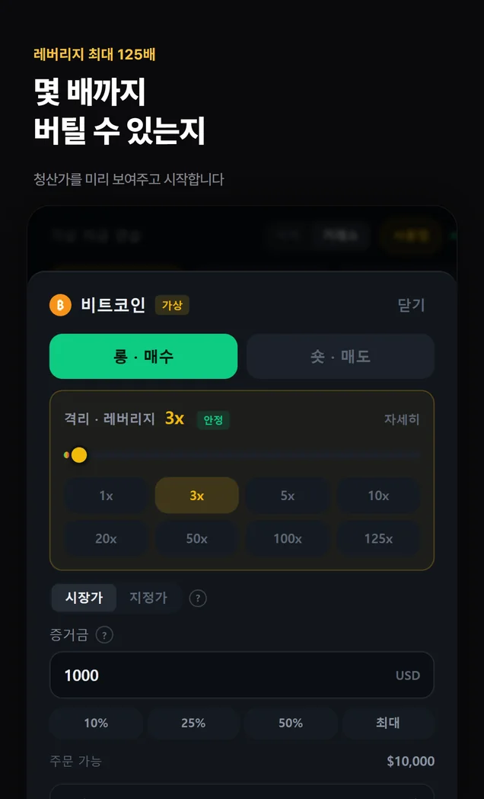
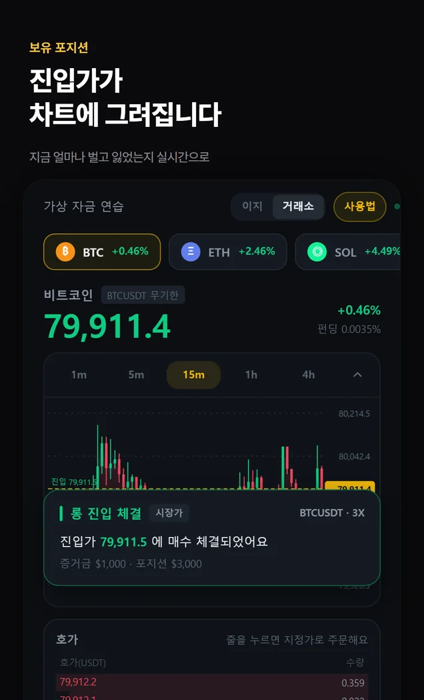
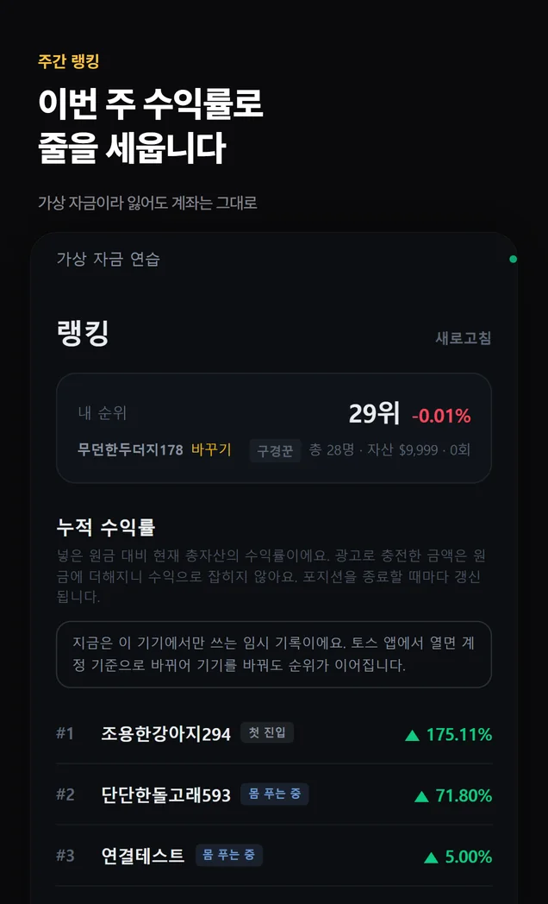

화면 둘러보기
앱 안은 이렇게 생겼습니다




옆으로 넘기세요
특징
선물 거래의 규칙을
돈 잃기 전에 익힙니다
실시간 시세를 보며 수수료와 펀딩비, 청산이 어떻게 계산되는지 익힙니다. 거래에는 가상 자금을 씁니다.
- 4종목
실시간 시세
비트코인·이더리움·솔라나·리플. 차트도 호가도 지금 값입니다.
- 125배
레버리지
배수를 올리면 청산가가 그 자리에서 바뀝니다. 몇 %만 반대로 가면 끝나는지 미리 봅니다.
- 그대로
수수료 · 펀딩비 · 청산
무기한 선물 계산식을 그대로 씁니다. 8시간마다 펀딩비가 빠지고, 증거금이 바닥나면 청산됩니다.
- 2가지
이지 · 거래소 모드
처음엔 롱·숏 버튼 둘. 익숙해지면 지정가와 호가창이 있는 거래소 화면.
- 주간
수익률 랭킹
이번 주 수익률로 줄을 섭니다. 닉네임은 자동으로 정해져서 누구인지 드러나지 않습니다.
- 1일 1회
무료 초기화
잃으면 처음으로. 하루 한 번은 그냥, 그 이상은 광고 한 편을 보고.
지금 이 순간
랭킹 상위 5
앱이 읽는 것과 같은 표를 같은 자리에서 읽습니다. 숫자는 이 페이지를 연 순간의 값입니다.
—명이 랭킹에 올라 있습니다
—1위 수익률
—마지막 거래
| 순위 | 닉네임 | 수익률 | 거래 |
|---|
닉네임은 앱이 자동으로 지어 준 것이고, 서버에는 익명 키와 닉네임·성적만 있습니다.
이용 방법
공식 플랫폼에서 시작하세요
- 1
토스 앱을 엽니다
따로 설치할 게 없습니다. 토스가 이미 있으면 끝입니다.
- 2
검색창에 이름을 칩니다
‘해외 코인 선물 챌린지’ 또는 ‘코인 선물’.
- 3
바로 시작합니다
회원가입도 로그인도 없이 가상 1만 달러가 들어와 있습니다.
알아둘 것
먼저 말씀드립니다
- 가상 자금입니다. 실제 돈이 오가지 않고, 실제 거래소 계좌와 연결되지 않습니다.
- 투자 조언이 아닙니다. 랭킹의 수익률은 연습 계좌의 결과일 뿐입니다.
- 시세는 거래소가 공개하는 값을 그대로 받습니다. 표시가 잠깐 늦어질 수 있습니다.
- 서버에 저장되는 것은 토스가 주는 익명 키, 닉네임, 성적뿐입니다. 이름·전화번호·생년월일은 받지 않습니다.
다른 앱